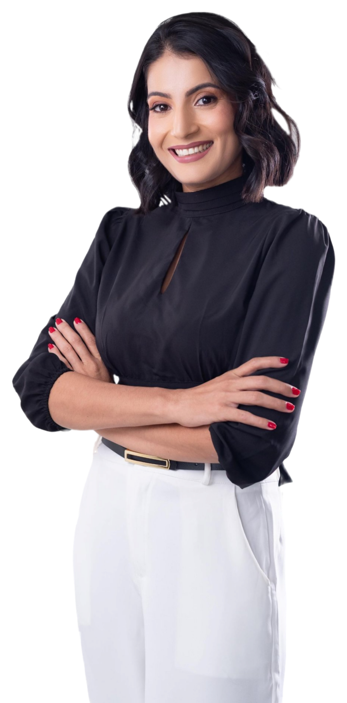

Aqui entra a história aprovada da Jhessica: como a loja começou, o porquê das receitas sem glúten e sem leite, e o cuidado de fazer tudo à mão, por encomenda.
Texto provisório só para a prova de composição — o real vem do arquivo de dados.
